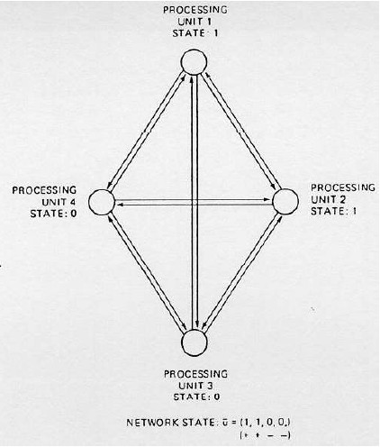
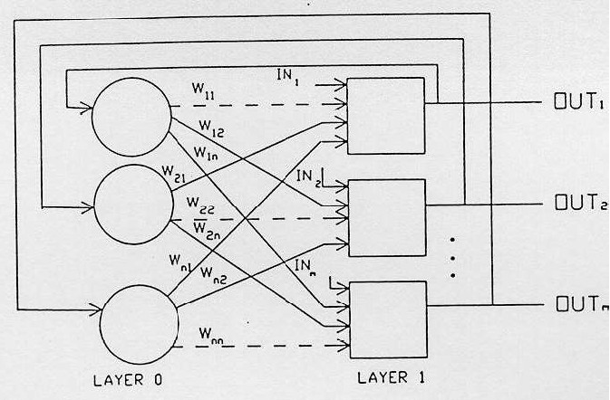
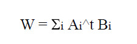

Creado por Ismael Jimenez - Octubre 2023
Tiene una única capa de unidades procesadoras (Neuronas).
Cada una de las unidades procesadoras tiene un valor o nivel de activación, también llamado estado, que es binario
Tiene un estado en cada momento.
Este estado se define por el vector de unos y ceros constituido por los estados de todas las unidades procesadoras.
El estado de una red con n unidades procesadoras, donde el elemento i tiene el estado ui se representa según la ecuación U = (u1, u2,........,un) = (+++--.......++)
Las unidades procesadoras de la red Hopfield están completamente interconectadas.
Esta topología convierte a la red Hopfield en una red recursiva ya que la salida de cada unidad está realimentada con las entradas de las demás unidades.

Una característica de las redes Hopfield es la doble conexión por cada pareja de unidades procesadoras. Además los pesos asignados a ambas conexiones tienen el mismo valor.
Aqui vemos un método alternativo de representación de la estructura y conexiones de la red Hopfield.

es heteroasociativa en cuanto que acepta un vector de entrada en un conjunto de neuronas y produce otro vector relacionado, un vector de salida en otro conjunto de neuronas.
La red debe ser entrenada para reconocer o recordar una serie de memorias o vectores. Este cálculo lo realizan las redes BAM modificando sus pesos a lo largo de la fase de entrenamiento utilizando la regla de Hebb

Las asociaciones o memorias de la red se almacenan en las matrices W y W^T. Para recuperar una asociación basta con presentar parcial o totalmente el vector A en la salida de la primera capa.
La red a través de W produce un vector de salida B en la capa segunda. Este vector opera sobre la matriz traspuesta W^T produciendo una réplica próxima al vector de entrada A en la salida de la capa primera.
Cada paso en el lazo de la red produce que los vectores de salida de ambas capas sean cada vez más próximas a la memoria o asociación almacenada.
Este proceso se lleva a cabo hasta que se alcance un punto estable llamado resonancia en el que los vectores pasan hacia adelante y hacia atrás reforzando las salidas sin modificarlas.
La relación estrecha entre la red BAM y la red Hopfield se manifiesta en el caso de que la matriz sea cuadrada y simétrica (W = W^T).